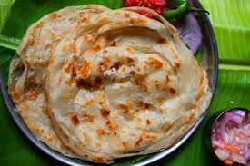

Home
Parotta

Description:
Parotta is a delicious, flaky, layered South Indian flatbread renowned for its unique texture—it is crispy on the outside and soft and chewy on the inside. This sought-after street food staple is often described as rich, comforting, and incredibly satisfying.
Ingredients:
- Flour: 2 cups All-purpose flour (Maida)
- Sweetener: 2 tsp Sugar
- Salt: ½ tsp or to taste
- Liquid: ¼ cup Milk or warm water (or a mix)
- Fat: 2 tbsp Oil (for dough) + more for coating/cooking
- Optional: 1 Egg, Baking Powder (for extra softness)
Steps:
- Mix Dry Ingredients: In a bowl, combine flour, sugar, and salt.
- Form Dough: Add milk/water and 2 tbsp oil, mix to form a soft, slightly sticky dough. Knead for 10-15 mins until smooth and elastic.
- First Rest: Coat with oil, cover with a damp cloth, and rest for 30-60 mins.
- Ball Up: Knead again briefly, divide into 8 equal balls, coat with oil, and rest for another 20-30 mins.
- Stretch & Pleat (The Key):
- On an oiled surface, roll or stretch a dough ball very thin, almost transparent.
- Apply oil and gather the thin sheet by pleating it lengthwise like a saree.
- Twist the pleated strip into a spiral, tucking the end underneath.
- Second Roll: Rest the spiral for 5 mins, then gently flatten and roll it into a 7-8 inch disc.
- Cook: Heat a tawa (griddle) on medium flame. Cook the parotta, flipping and applying oil on both sides until golden brown spots appear.
- Fluff: Remove and immediately press/beat the hot parotta on both sides to open the layers. Serve hot.